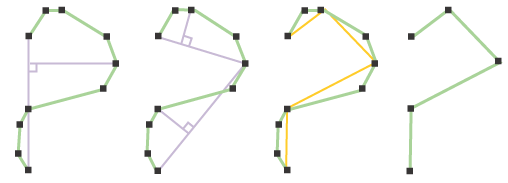

Linear Generalization
Linear Generalization is a kind of data compression algorithm. Consist in reduce the number of vertices needed to represent a linear geometry without modify its spatial identity.

gvSIG supports two types of linear generalization: topologic and non-topologic. In topologic generalization geometry topology is preserved (closed polylines will remain closed, polygon's holes will be contained in polygon's shell, etc.) Non-topologic generalization is implemented with Douglas-Peucker algorithm. Distance tolerance is a parameter to specify the compression level of the resulting geometries.